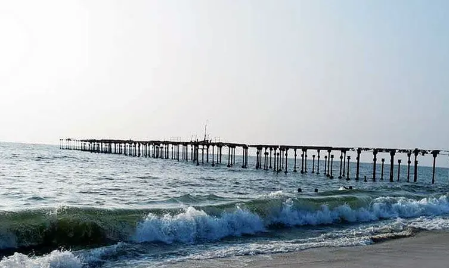
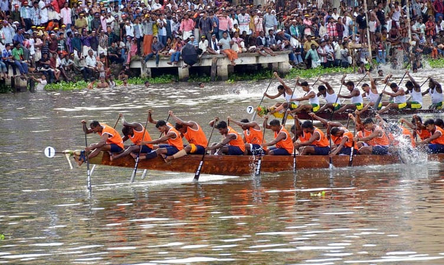

1.Kuttanad Backwaters
1.Kuttanad Backwaters
One of the best places to visit in Alleppey is Kuttanad Backwaters. This isn’t a place, it’s a phenomenon. It is a spectacular lagoon, surrounded by the beauty of lakes, rivers, canals, misty mountains and ethereal landscapes.
The experience of floating along the pristine backwaters on a houseboat is inexplicable. You will have to live it to know it! The place is also known as the ‘Rice bowl of Kerala,’ for its stunning rice plantations. If you are in Alleppey for a day, then this place should be your entire itinerary.
LOCATION: Kuttanad Taluk, Alappuzha district, Kerala—688504.
TIMIMGS: 10.45 AM to 9.15 PM
ENTRY FEES: INR 10 for lower ,INR 15 for upper decks

2.aleppey beach
Glistening sands, crystal clear water, beautiful waves, enchanting sunrise, and sunset is what makes the Alappuzha or the Alleppey beach one of the best places to visit in Alleppey. This stunningly beautiful beach is known for its vast, endless stretches, thereby proving as a getaway for couples as well as families.
The beach is also close to Sea View Park, which offers an opportunity to enjoy and have fun through different types of boat rides. A picnic spot is located close-by, therefore families can enjoy a day off at the beach and picnic at that spot. The beach is often referred to as the ‘Venice of the East,’ because of its romantic location and popularity among European countries.
The remains of Alappuzha Sea Bridge also make it one of the most popular destinations for explorers, narrating the tales of those times when Alleppey was one of the most famous and important port destinations in the state of Kerala. The beach has beautiful stretches, making the visit to this beach quite ecstatic and enjoyable.
LOCATION: Alappuzha 688007
TIMIMGS: All day
ENTRY FEES: none
3.Edathu Church
This famous church is known for celebrating huge feasts during the month of May. The church is also popular for its Christian and non-Christian pilgrims. The Vicar of this Palli was Father Thoman Olakkapady. Currently, the church is located close to the Mahatma Gandhi University’s St. Aloysius College which is built and managed by the church.
Since the church is located close to the below sea level area, therefore travelers can enjoy agricultural lands and rice farms that are seen separated through the rivers. The environs here are enchanting, with mud levees being used for separating runs which are nothing less than a highway or street that one would find in New York. A massive shrine at Edathua is located close by. The shrine features architecture similar to that of the churches in Medieval Europe.
The church itself was built in 1st century AD and is said to be built by St. Thomas himself, who was a disciple of Jesus Christ. The annual feast that is celebrated here starts on the 27th of April and concludes on the 7th of May. The feast sees St. George carried out, decked in golden colored regalia. Special church prayers are sung and some of them even feature the Syrian dialect of Hebrew.
LOCATION: Church Road, Edathua, Kuttanad Taluk, Kerala 689573
TIMIMGS: 4 AM to 8 PM
ENTRY FEES: None.

4.nehru trophy boat race
Held in the memory of Jawaharlal Nehru, this boat race is unlike any other boat racing activity you may have seen before. The Nehru Trophy Snake Boat Race, also known as Vallam Kali, is an annual competition that takes place every August on a part of Lake Vembanad. It is one of the cultural highlights of the state, so plan your visit accordingly if it is your desire to see and experience this boat race.
Unlike other boat racing events which have teams of 5 to 10 rowing furiously in silent concentration, this boat race has teams of at least 100 people, usually fishermen, who row together as they sing at the top of their voice. It is a wonderful experience to simply see the boats row past as you stand on the banks of the lake
LOCATION: Punnamada Backwaters in Alappuzha.
TIMINGS:August month of every year.
ENTRY FEES: None.